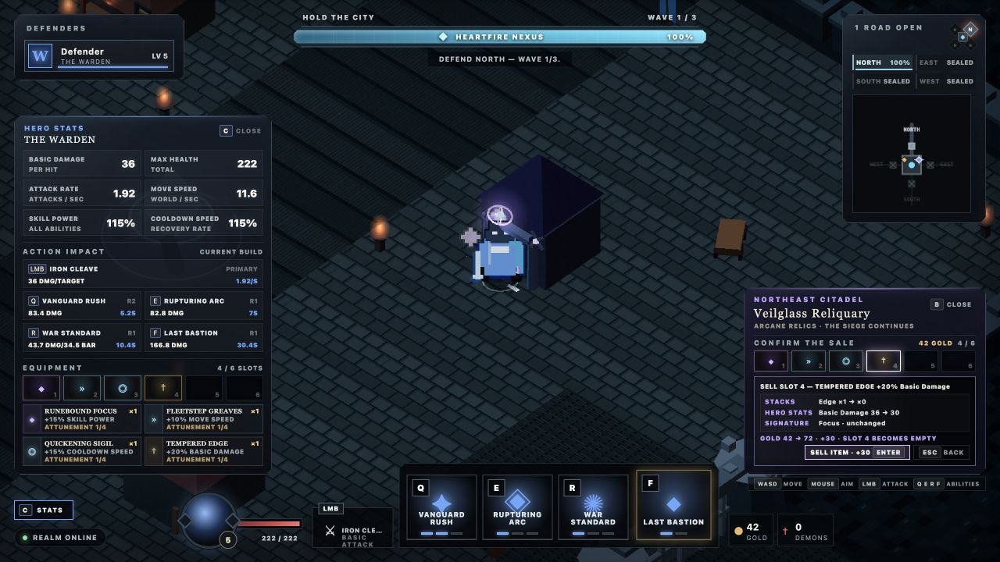

Hold the city
The Heartfire Nexus is always the objective. Gates may fall; the run ends only when the city loses its heart.
SIEGEHEART DEVELOPMENT COMPANION
A 1–4 player dark-fantasy action RPG about defending the Heartfire Nexus, surviving the breach, and carrying the fight back through the invasion rift.
Playable game hosting remains pending a configured Bun/WebSocket host.
LATEST VERIFIED CHECKPOINT · 0.1.31
A defining ware now asks for a real retreat, and an equipped choice can return value without turning the Citadel into a remote inventory screen.
FROM 0.1.30 Bound the Host, Read the Screen, Trust the Shot, Read the Wall, two distinct physical shops, four curated wares, six unrestricted duplicate-ready run-only sockets, authoritative Attunement, Combat Stride, bounded reconnection, champion stats, controls, art, and audio remain intact.

The Heartfire Nexus is always the objective. Gates may fall; the run ends only when the city loses its heart.
Warden, Riftstalker, Ashcaller, and Gravebinder share one control grammar while changing how every horde is solved.
Survive the breach, stabilize the Nexus, then push together through the north road and destroy the Rift Heart.